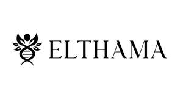

Trade Mark Journal No.2025/047 21 November 2025
UK00004291666 9 November 2025 (3,5)

- Class 3
- Perfumery; perfumes; eau de toilettes; fragrances and fragrance oils; essential oils; aromatherapy products and preparations; incense; non-medicated toilet preparations; cosmetic preparations; beauty and personal care preparations; toiletries; skin care preparations including creams, milks, lotions, gels, serums, masks, moisturisers, balms, powders and toners for the face, body and hands; cleansers; exfoliating preparations; make-up and make-up removers; anti-ageing, brightening and whitening cosmetic preparations; cosmetic preparations for slimming purposes; sun-tanning and after-sun preparations; bath and shower preparations including bath gels, salts, oils, foams and herbs, not for medical purposes; soaps; hand cleaning preparations; cleansing gels and wipes impregnated with cleansing or refreshing preparations; hair care preparations including shampoos, conditioners, lotions, gels, mousses, balms, sprays, waxes, oils, colourants, de-colorizing and waving preparations; shaving and after-shave preparations; depilatory preparations; deodorants and anti-perspirants for personal use; body care products including body lotions, creams, oils, butters, washes and scrubs; lip balms (non-medicated); dental and oral hygiene preparations including dentifrices and mouthwashes (non-medicated); massage oils (cosmetic); herbal and natural cosmetic preparations; traditional herbal cosmetic products; talc; cosmetic kits and toiletry sets; adhesives for affixing false hair and false eyelashes; adhesives for cosmetic purposes; aloe vera preparations for cosmetic purposes; nonmedicated balms; cosmetic creams and pencils; cotton wool and cotton swabs for cosmetic purposes; false eyelashes and false nails; greases and henna for cosmetic purposes; massage gels other than for medical purposes; pumice stone; tissues impregnated with cosmetic lotions; breath freshening sprays and strips; preparations for cleaning dentures; dental bleaching gels; denture polishes; amber being perfume; cologne; extracts of flowers being perfumes; fumigation incenses; ionone being perfume; lavender water; mint for perfumery; musk being perfumery; scented water; toilet water; douching preparations for personal sanitary or deodorant purposes; beauty creams for body care; eyebrow pencils and cosmetics; cosmetic preparations for eyelashes; lipsticks and lip glosses; makeup powder and removing preparations; mascara; nail varnish, nail polish and care preparations; nail art stickers and decorative transfers for cosmetic purposes; almond soap; antiperspirant soap; cakes of soap; deodorant soap; shower and bath gels; nonmedicated soap; soap for foot perspiration; alum stones being astringents for cosmetic purposes; depilatory wax; depilatories; pastes for razor strops; shaving soap; pre-shaving preparations; shaving stones being astringents for cosmetic purposes; cosmetics for animals; deodorants for pets; shampoos for pets; pet fragrances; mint essence being essential oil; bergamot oil; essential oils for flavorings for beverages; essential oils of cedarwood, citron, lemon, jasmine, lavender and rose; oils for cosmetic, toiletry, perfume and scent purposes; terpenes being essential oils; ammonia for cleaning purposes; detergents for household use; antistatic preparations for household purposes; canned pressurized air for cleaning and dusting purposes; cleaning chalk; cloths impregnated with a detergent for cleaning; dry cleaning preparations; drying agents for dishwashing machines; floor wax remover; lacquer-removing preparations; nonslipping wax for floors; oil of turpentine for degreasing; oils for cleaning purposes; paint stripping preparations; parquet floor wax; cleaning preparations to make the leaves of plants shiny; polish for furniture and flooring; polishing preparations; polishing wax; polishing creams; polishing rouge; jewellers' rouge; rust removing preparations; scouring solutions; shining preparations being polish; stain removers; turpentine for degreasing; varnish removers; volcanic ash for cleaning; wallpaper cleaning preparations; household fragrances; air fragrancing preparations; incense; joss sticks; potpourri; sachets for perfuming linen; scented wood; vehicle cleaning preparations; windscreen cleaning liquids; windshield washing fluid; car polish; car wax; automobile cleaners; automobile, tire, glass and wheel cleaning preparations; laundry preparations; bleaching salts; bleaching soda; color-brightening chemicals for household purposes; fabric softeners; laundry bleach; laundry bleaching preparations; laundry blueing; laundry glaze; laundry wax; laundry presoak; quillaia bark for washing; laundry starch; soap for brightening textile; washing soda for cleaning; tailors' wax; abrasives; abrasive cloth and paper; emery paper; emery cloth; glass cloth being abrasive cloth; polishing stones; polishing paper; sandcloth; foot smoothing stones.
- Class 5
- Pharmaceutical and medicinal preparations and substances; prescription and over-the-counter drugs; biopharmaceuticals; vaccines and vaccine adjuvants; sera and antigens; radiopharmaceuticals; diagnostic preparations and reagents for medical or veterinary purposes, including contrast agents and reagent paper; stem cells, cell and tissue culture preparations for medical or veterinary purposes; homeopathic preparations; traditional herbal medicinal products; dietetic substances, foods and beverages adapted for medical use; foods for babies and infants; diabetic foods; foods for medically restricted diets; gluten-free and lactose-free foods and drinks for medical purposes; nutritional, dietetic and nutraceutical preparations, products and supplements; vitamin and mineral preparations, extracts, beverages and supplements; amino acid and protein preparations and supplements including whey, casein, albumin, peptides and collagen; fatty acid and oil preparations including flaxseed/linseed oil, fish oil and evening primrose oil for medical purposes; antioxidant preparations and supplements; enzyme preparations and enzyme dietary supplements; probiotics and ferments for medical or veterinary use; royal jelly for medical purposes; ginseng preparations; soy isoflavone preparations; creatine, glutamine and whey- or casein-based supplements; activated charcoal for medical use including for adsorption of toxins and as antidotes; CBD-oil containing dietary supplements where lawful; nutricosmetic nutritional supplements; fitness and endurance supplements and sports nutrition products; delivery agents in the form of tablet coatings and dissolvable films that facilitate the delivery of nutritional supplements; medicinal drinks and beverages including vitamin, protein, mineral, herbal and isotonic formulations, and compositions for the preparation thereof; electrolyte solutions for medical purposes; preparations and substances for promoting digestion, circulation, memory, relaxation and sleep, and for the relief of tiredness, stress and anxiety; weight-management and slimming preparations; preparations and substances for the treatment or relief of colds and influenza, fever, headaches, inflammation, dermatological conditions including eczema and psoriasis, scalp and dandruff conditions, rheumatic and muscular pain, menstrual disorders, menopausal symptoms, poor circulation and bowel complaints; tonics (medicine); medicated confectionery; medicated preparations for making beverages; herbal preparations, extracts, tinctures and teas for medical purposes; natural remedies and botanicals for medical purposes; sanitary preparations and articles for medical or veterinary use; disinfectants and sterilising preparations; sanitizing washes and wipes including for fruit and vegetables; saline and irrigation solutions; solutions for contact lenses including cleaning, rinsing, neutralising and sterilising solutions; antiseptics and smelling salts; adhesive plasters and dressings; bandages including for making casts; sterile dressings and films; self-adhesive dressings; surgical plasters; medical tapes; wound-healing sponges and materials; skin patches for the transdermal delivery of pharmaceuticals and nutritional substances; dental and oral medicaments; medicated dentifrices and mouthwashes; dental materials and preparations including cements, composites, ceramics, alloys, waxes, varnishes, etching and impression materials, fissure sealants and adhesives for dentures and prostheses; sanitary pads, panty liners, tampons and nursing pads; babies’ diapers and swim diapers (disposable and reusable) and incontinence diapers and pants; diaper changing mats (disposable); air deodorising and air purifying preparations including activated-charcoal based; room, textile, carpet and refrigerator deodorising preparations (not for personal use); fabric deodorisers for sanitary purposes; disinfectants, fungicides, herbicides, pesticides, insecticides, vermin destroying preparations and repellents, including biocides, algicides, rodenticides and nematicides, for agricultural, horticultural, domestic and veterinary use; soil fumigating and sterilising preparations; bird, dog and animal repellents; flea collars, powders and sprays; dermatological pharmaceutical preparations including medicated creams, lotions, gels and ointments for acne, sunburn, skin disorders and scalp care; antifungal preparations including vaginal antifungals; medicated lip balms and hand creams; scar, wart, callus and corn treatment preparations; analgesics, antipyretics and anti-inflammatories including NSAIDs; cardiovascular preparations including for hypertension, angina and arrhythmias; central nervous system stimulants, sedatives and hypnotics; respiratory preparations including decongestants, expectorants and nose, ear and eye drops and lotions; gastrointestinal, urological, endocrine and metabolic preparations; anti-allergy and anti-infective preparations; hematological products and blood components; immunological preparations including immunoglobulins; women’s health preparations for menopausal and menstrual conditions; sexual health preparations including spermicides, lubricants, moisturisers and sexual stimulant gels; medical alcohol and alcohol swabs; hydrogen peroxide for medical purposes; salts for medical and mineral baths including Epsom salts; iodides and bismuth preparations for pharmaceutical purposes; bicarbonates for pharmaceutical purposes; starch, dextrins and cellulose for pharmaceutical purposes; chemical conductors for electrocardiograph electrodes; antidotes and adsorbents; re-hydration preparations; syrups for pharmaceutical purposes.
NOVA SKINCARE & WELLNESS BRANDS HOLDING. LTD